营销广告 · 操作与运营教程
模块配置、广告图配置与多语言图片编辑
一、功能概述
【营销广告】用于设置广告在什么页面、什么位置展示，以及展示时间、图片、跳转入口和可见人群。入口：【优惠】→【活动中心】→【营销广告】。
| 项目 | 说明 |
| 模块与广告的区别 | 模块负责展示页面、位置、规格和轮播方式；广告负责图片、链接、时间、语言和展示限制。先建模块，再向模块添加广告。 |
| 配置顺序 | 新增模块 → 新增广告 → 配置图片与跳转 → 检查预览 → 确认保存 → 核对列表状态。 |
| 展示检查 | 分别核对模块【是否开启】、广告【广告状态】、展示时间以及终端、人群等条件；不要只看其中一个开关。 |
| 使用前提 | 准备好展示位置、宣传图片和跳转目标；使用内部活动入口时，核对所选活动名称与ID。 |
本教程按提供的截图说明。截图中的品牌、模块ID、活动ID、日期、广告数量均为示例，不是固定配置值。
二、配置步骤
2.1 新增模块
进入【模块管理】，点击右上方【新增模块】。先选品牌、币种和展示位置，再设置广告图规格与轮播方式。
【图2】新增模块：基本字段与规格1
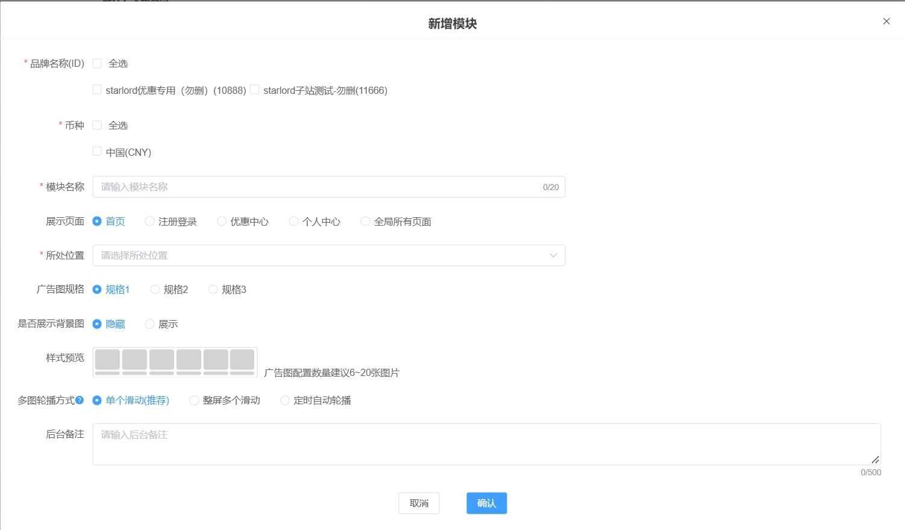 |
| 序号 | 字段 | 必填 | 填写说明 |
| 1 | 【品牌名称(ID)】 | 是＊ | 勾选本次配置的品牌；【全选】会选中当前可选品牌。仅多品牌站点涉及此字段。 |
| 2 | 【币种】 | 是＊ | 勾选本次配置的币种。仅多币种站点涉及此选择。 |
| 3 | 【模块名称】 | 是 | 填写便于识别的名称，截图显示字数上限为20。建议体现页面、位置或用途。 |
| 4 | 【展示页面】 | 选择项 | 可选【首页】【注册登录】【优惠中心】【个人中心】【全局所有页面】。选择本模块要出现的页面。 |
| 5 | 【所处位置】 | 是 | 从下拉框选择广告位置；可选位置以当前展示页面提供的选项为准。 |
| 6 | 【广告图规格】 | 选择项 | 选择【规格1】【规格2】或【规格3】，对照【样式预览】确认版式。 |
| 7 | 【是否展示背景图】 | 选择项 | 截图中规格1可选【隐藏】或【展示】；规格2、规格3的截图未显示此字段。 |
| 8 | 【多图轮播方式】 | 选择项 | 选择【单个滑动（推荐）】【整屏多个滑动】或【定时自动轮播】。 |
| 9 | 【停留秒数】 | 条件必填 | 选【定时自动轮播】后填写。截图示例为2秒，允许范围以页面校验为准。 |
| 10 | 【后台备注】 | 否 | 用于记录配置用途，截图显示字数上限为500。 |
＊必填以页面红色星号为准。【选择项】表示截图提供的选项，不额外推定其必填校验。
2.2 对比三种广告图规格
| 规格 | 截图中的预览样式 | 页面建议图片数量 |
| 【规格1】 | 一排六个小图位 | 6～20张 |
| 【规格2】 | 一排三个图位 | 5～10张 |
| 【规格3】 | 单个横向大图位 | 1～5张 |
以上是页面给出的配置建议，不应理解为统一的上传数量硬性限制。所选模块的实际可放置数量以页面提示为准。
【图3】规格1：展示位置与单个滑动
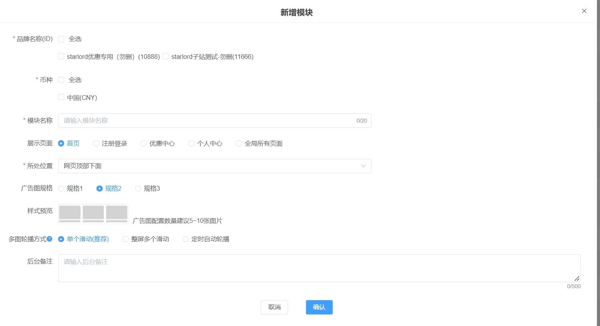 |
【图4】规格2：三个图位的样式预览
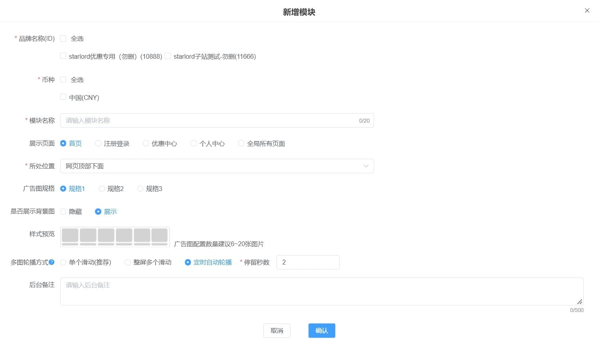 |
【图5】规格3：横向大图的样式预览
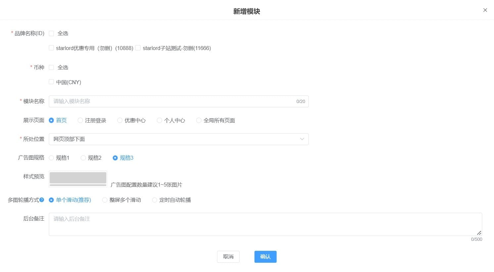 |
2.2.1 图片尺寸与配置能力
每次创建为单张图片；使用自定义广告图时，直接上传背景图片。文字未设置颜色时，按站点皮肤的默认颜色显示。
| 样式名称 | 背景图片尺寸 | 建议配置张数 | 自定义配置 | 文字配置 | 背景配置 | 备注 |
| 样式1 | 小图 最小限制220px*220px | 6+ | ✓ | ✓ | ✓ | 超过建议数量会依照设置轮播或左右切换 |
| 样式2 | 中图 最大限制672px*402px | 3+ | ✓ | ✓ | ✓ | |
| 样式3 | 大图 宽度限制1065px，高度不限 | 1+ | ✓ | ✓ | ✓ | |
| 悬浮图 | 小图 最小限制220px*220px | 1+ | ✓ | ✓ | ✓ |
✓ 表示支持。本表按最新确认内容更新，张数为建议值。
2.3 选择轮播方式并保存模块
| 方式 | 如何选择 | 检查重点 |
| 【单个滑动（推荐）】 | 逐个浏览图片时选择。 | 检查单图内容能否独立表达。 |
| 【整屏多个滑动】 | 需要成组展示多张图片时选择。 | 检查同一组图片是否协调、易读。 |
| 【定时自动轮播】 | 需要定时切换图片时选择，并填【停留秒数】。 | 停留时间应让用户能读完图片中的主要信息。 |
【图6】定时自动轮播：填写停留秒数
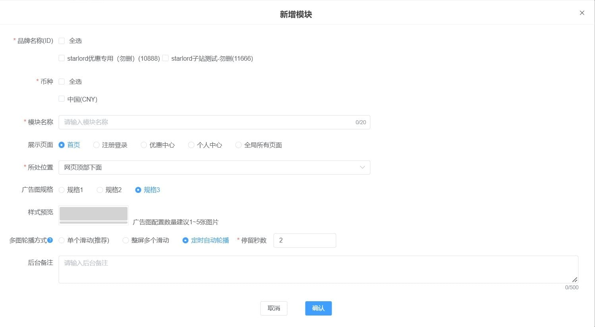 |
确认【样式预览】和字段后，点击底部【确认】保存模块。回到【模块管理】，核对新增模块的名称、页面、位置、规格和【是否开启】。
2.4 新增广告
备注：配置登录／注册模块的营销广告前，必须关闭宣传语展示。进入【会员】→【注册和验证】→【登录/注册配置】，选择对应品牌配置，在【展示样式】点击【修改】，将【登录/注册页宣传语】设为【不展示】并保存。若未关闭宣传语展示，登录／注册页的营销广告不会展示。
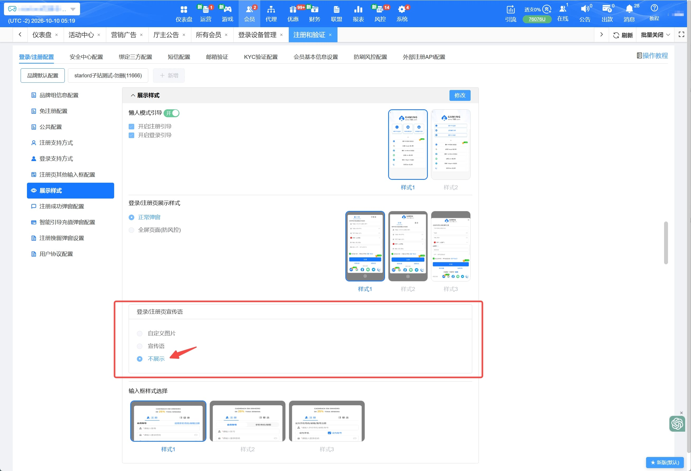 |
切换到【全部广告】，点击右上方【新增广告】。在【选择放置模块】中选择已建模块；需要新模块时可点击旁边【添加模块】。
【图8】新增广告：图片、跳转、时间、语言与展示范围
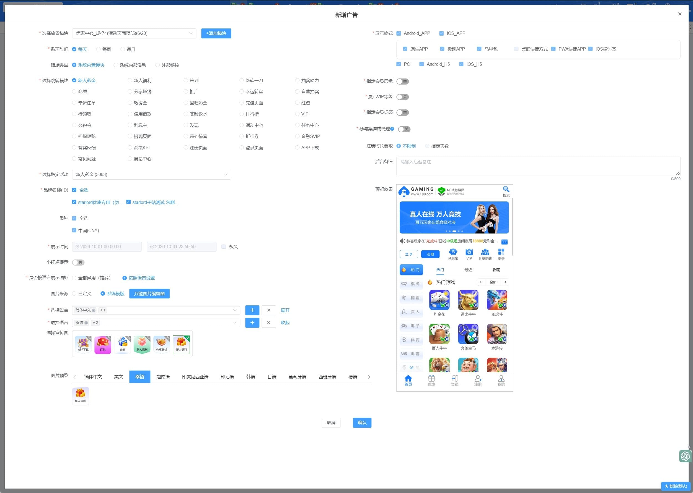 |
| 序号 | 字段 | 必填 | 填写说明 |
| 1 | 【选择放置模块】 | 是 | 核对下拉项中的模块名称、规格、位置及数量提示，避免放入错误模块。 |
| 2 | 【循环时间】 | 是 | 可选【每天】【每周】【每月】；截图选中【每天】。切换后按当前界面填写对应选项。 |
| 3 | 【链接类型】 | 选择项 | 选择【系统内部模块】【系统内部活动】或【外部链接】，再填写该类型出现的目标字段。 |
| 4 | 【选择跳转模块】 | 条件必填 | 截图在【系统内部模块】下提供内部入口；按宣传内容选择对应入口。 |
| 5 | 【选择指定活动】 | 条件必填 | 字段出现时选择具体活动；截图示例为【新人彩金（3063）】，须核对名称与ID。 |
| 6 | 【品牌名称(ID)】／【币种】 | 按页面标记 | 多品牌、多币种站点核对本广告覆盖范围。 |
| 7 | 【展示时间】 | 是 | 设置开始与结束时间，或按需要选择【永久】。截图日期仅为示例。 |
| 8 | 【小红点提示】 | 开关 | 按本次广告需要选择开或关。 |
| 9 | 【是否按语言展示图标】 | 选择项＊ | 【全部通用（推荐）】使用通用图；【按照语言设置】按语言配置图片。 |
| 10 | 【图片来源】 | 选择项 | 可选【自定义】或【系统模板】；系统模板旁有【万能图片编辑器】入口。 |
| 11 | 【选择语言】／【选择宣传图】 | 条件必填 | 按语言设置时，先选语言，再选对应宣传图；用【＋】【×】【展开】【收起】管理配置行。 |
| 12 | 【展示终端】 | 是 | 勾选本次展示的终端及所需APP形态，逐项核对，不照搬截图中的全选范围。 |
| 13 | 人群与渠道开关 | 按页面标记 | 按需设置【指定会员层级】【展示VIP等级】【指定会员标签】【参与渠道或代理】。开启后补齐当前页面要求的条件。 |
| 14 | 【注册时长要求】 | 选择项 | 可选【不限制】或【指定天数】；选指定天数后按页面提示配置。 |
| 15 | 【后台备注】 | 否 | 记录用途、投放批次等，截图显示字数上限为500。 |
＊图片语言设置项在截图中有红色标记；其中各子项是否必填按所选模式与页面校验处理。未展开的人群条件、每周／每月时间项和外部链接表单，不在本教程中推定其具体字段。
| 终端组 | 截图可见选项 | 配置检查 |
| APP | 【Android_APP】【iOS_APP】；相关形态包括【原生APP】【极速APP】【马甲包】【桌面快捷方式】【PWA快捷APP】【iOS描述签】。 | 确认所选终端和具体形态符合本次投放范围。 |
| 网页端 | 【PC】【Android_H5】【iOS_H5】。 | 分别检查电脑端和手机网页端的图片、文字与链接。 |
2.5 配置通用图片或多语言图片
| 图片模式 | 操作 | 适用情况 |
| 【全部通用（推荐）】 | 选通用宣传图，再查看图片预览。 | 一张图片能准确表达所有目标语言的内容。 |
| 【按照语言设置】 | 添加语言行，选择语言及宣传图；逐个切换【图片预览】语言标签。 | 图片含需翻译文案，或不同语言使用不同素材。 |
选择【系统模板】后，可直接选择宣传图；需要调整图片时点击【万能图片编辑器】。完成后回到广告配置页，核对【图片预览】与右侧【预览效果】。
2.6 使用广告万能图片编辑器
首次进入时可按【新手引导】逐步熟悉界面，也可点击【跳过教学】。截图显示引导共11步，并提供【1周内不再显示】选项。
【图9】图片编辑器与新手引导
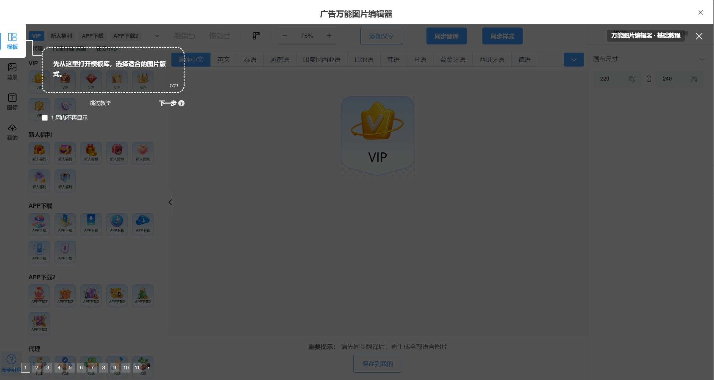 |
| 步骤 | 操作 | 完成后检查 |
| 1．选模板 | 点击左侧【模板】，按顶部分类选择版式；截图可见VIP、新人福利、APP下载、代理、任务中心等分类。 | 版式符合广告用途，画布尺寸与放置模块要求匹配。 |
| 2．换背景 | 点击【背景】，从【系统自带】或【最近使用】中选择素材。 | 背景与文字对比清晰，不影响阅读。 |
| 3．改图标 | 点击【图标】选择素材，再选中画布中的图片调整。 | 图标没有遮住标题和关键信息。 |
| 4．改文字 | 选中文字编辑文案；需要新增内容时用【添加文字】。 | 文案准确，文字不超出画布，不与其他素材重叠。 |
| 5．切换语言 | 在顶部切换语言标签，按需使用【同步翻译】和【同步样式】。 | 逐语言检查翻译、样式和文字长度。 |
| 6．保存与返回 | 按编辑器提示先同步翻译，再生成全部语言图片；按需点击【保存到我的】。返回广告页选择素材并预览。 | 保存素材不等于提交广告，仍需在广告配置页确认保存。 |
【图10】背景素材与画布尺寸
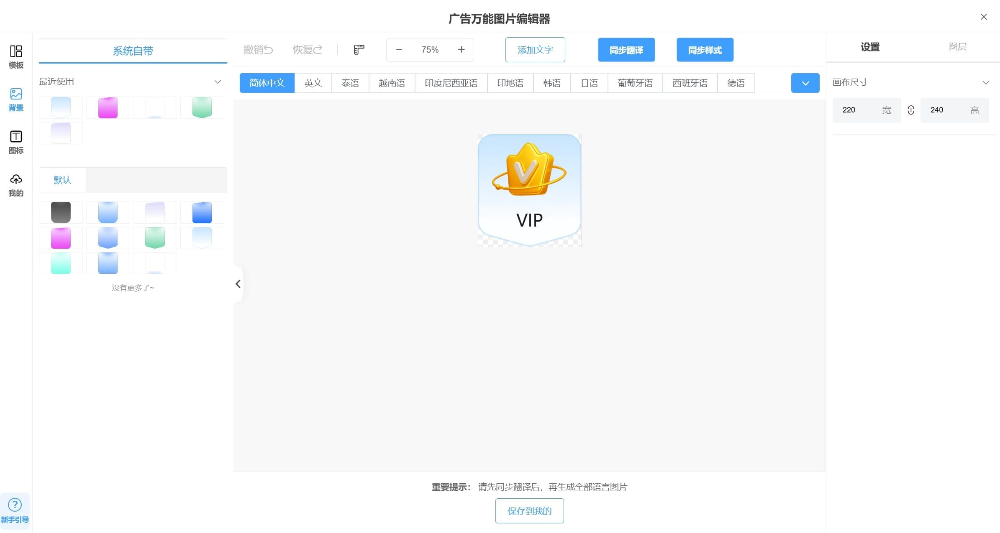 |
右侧【设置】可查看【画布尺寸】，截图示例为宽220、高240。此数值是当前模板示例，不是所有广告的统一尺寸。右侧还有【图层】标签，便于定位画布中的内容；顶部可用【撤销】【恢复】及缩放控件检查编辑结果。
2.7 调整图片与文字
【图12】选中图片后：裁剪、透明度、圆角与图片动效
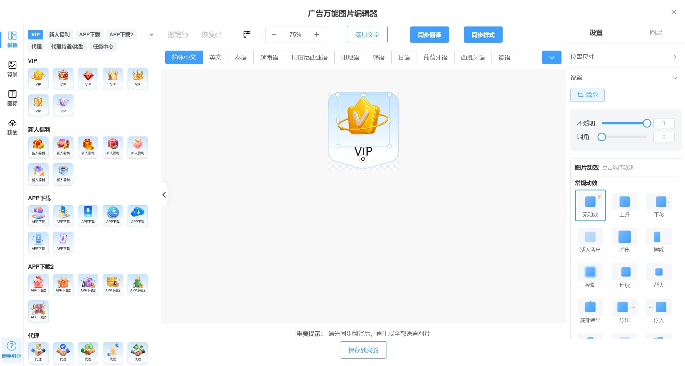 |
选中图片后，可调整【裁剪】【不透明】【圆角】和【图片动效】。截图展示【无动效】【上升】【平移】【淡入淡出】【弹出】等效果。先确认静态布局正确，再按需要选择动效。
【图13】选中文字后：文字样式、文字特效与文字动效
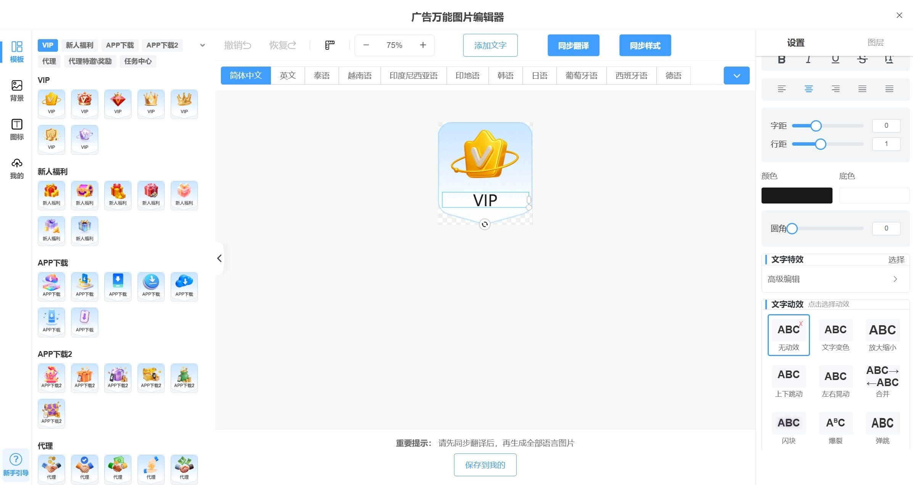 |
选中文字后，可调整加粗、斜体、下划线、对齐、【字距】【行距】【颜色】【底色】【圆角】，并使用【文字特效】【高级编辑】【文字动效】。截图展示【无动效】【文字变色】【放大缩小】【上下跳动】【左右晃动】等选项。动效不应影响主要文案的辨认。
多语言处理顺序：先完成基准语言内容 →【同步翻译】→ 检查各语言 → 按需【同步样式】→ 再检查布局 → 生成全部语言图片。翻译与样式同步后，都要逐语言复核。
2.8 管理个人图片和模板
【图15】【我的】→【图片】：上传与管理个人素材
2.8 管理个人图片和模板
【图15】【我的】→【图片】：上传与管理个人素材
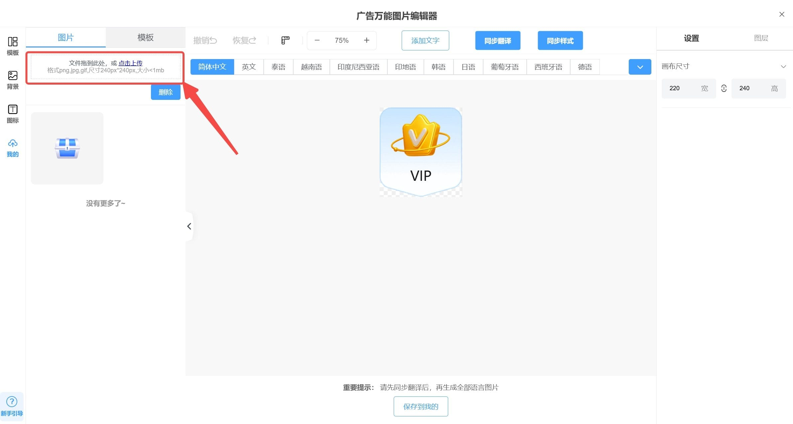 |
在【我的】→【图片】中按上传区提示添加素材。截图标注要求：png、jpg、gif，尺寸240px×240px，大小＜1MB。该要求针对截图中的个人图片上传区，不应套用于所有广告图。需要移除个人素材时使用【删除】，先确认选中的素材。
【图16】【我的】→【模板】：管理已保存模板
在【我的】→【模板】查看个人模板，选择合适的模板继续编辑；删除前确认所选项目。图片编辑完成后，回到【新增广告】，选择对应宣传图并逐语言预览。
2.9 提交前核对
| 检查项 | 确认内容 |
| 模块 | 模块名称、ID、展示页面、位置和规格均正确。 |
| 品牌与币种 | 只覆盖本次需要的品牌和币种。 |
| 时间与循环 | 开始／结束时间、是否永久、循环方式符合计划。 |
| 图片与语言 | 每个语言都有对应图片；标题、说明与图标没有遮挡或裁切。 |
| 跳转目标 | 所选模块／活动／链接与图片文案一致。 |
| 终端与人群 | 目标终端、会员条件、渠道和注册时长要求正确。 |
| 预览 | 查看【图片预览】和【预览效果】，再点击底部【确认】。保存后回列表核对状态。 |
三、管理操作
在【模块管理】查看模块配置、广告数量和启用情况。用品牌、币种、模块ID、展示页面及状态筛选目标模块，再执行操作。
【图1】模块管理：筛选、开关、修改、详情与操作记录
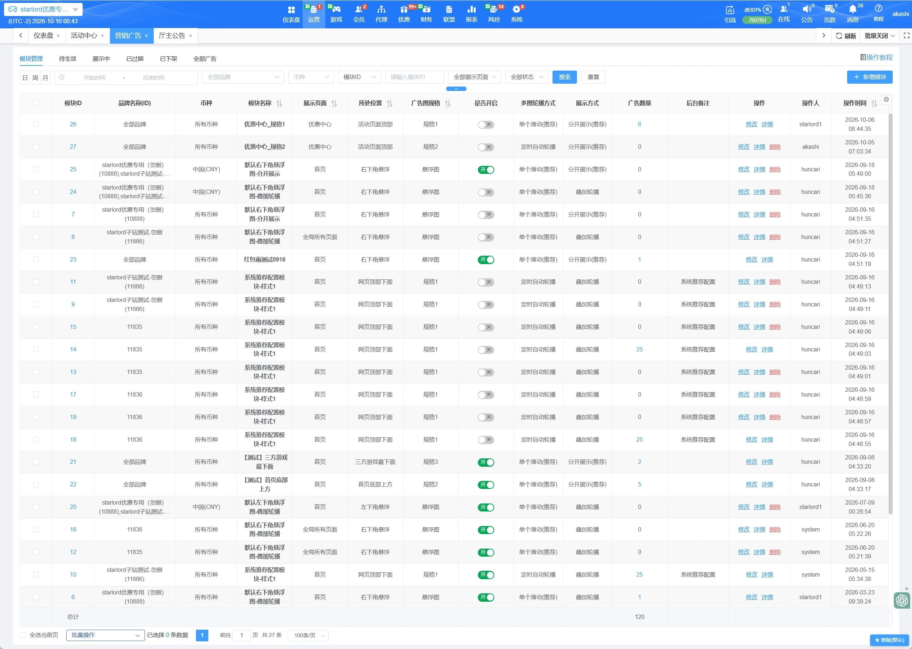 |
| 操作 | 方法 | 核对内容 |
| 查找模块 | 填写筛选条件，点击【搜索】；清空条件用【重置】。 | 核对模块ID，避免操作同名模块。 |
| 开启／关闭模块 | 操作目标行的【是否开启】开关。 | 确认操作对象和开关结果，再检查关联广告。 |
| 修改模块 | 点击目标行【修改】。 | 调整页面、位置或样式后，检查关联广告的预览。 |
| 查看模块 | 点击目标行【详情】。 | 查看目标模块的信息，不与相邻行混淆。 |
| 删除模块 | 仅对显示【删除】入口的目标行执行。 | 先核对模块ID、广告数量和仍在使用的投放配置。 |
| 批量操作 | 底部有【批量操作】入口；先勾选目标行，再选择当前页面提供的操作。 | 提交前复核全部选中项；截图未展开的批量选项不作推定。 |
列表中的【展示方式】可见【分开展示（推荐）】、【叠加轮播】等值；它与【多图轮播方式】是不同列，核对时不要混淆。
管理单条广告时，进入广告列表，先核对所属模块、展示时间、语言与状态，再使用目标行当前可用的操作入口。
3.1 悬浮图展示与排序
| 场景 | 初始排序／展示 | 后续操作效果 |
| 同侧3个模块全部设为【可关闭】 | 按模块操作时间由近到远、自上而下排列；最多显示3个模块。 | 当前显示模块被删除后，显示后续模块。 |
| 同侧2个【可关闭】，1个【隐藏关闭按钮】 | 【隐藏关闭按钮】的模块排在最上。 | 可关闭模块被删除后，显示后续模块；收起后的隐藏小图标始终排在最上，恢复后回到原本位置。 |
| 同侧3个模块全部设为【隐藏关闭按钮】 | 首次进入页面时，按模块操作时间由近到远、自上而下排列。 | 会员点击隐藏后，按隐藏操作的优先顺序调整；优先隐藏的小图标排序最下，展开后的示例位置见图18。 |
❚ 场境一：同边的模块(左或右)，条件「是否可关闭」→开启模块，3个全部设置「可关闭 」
▸ 排序依模块的操作时间排序，由上到下显示，操作时间越近，排序越上。
▸ 最多显示3个模块。删除当前模块，显示下一个模块。
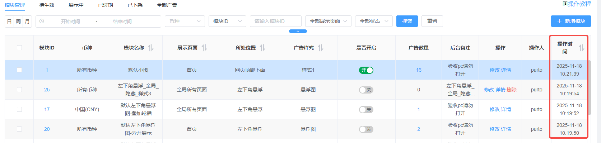
❚ 场境二：同边的模块(左或右)，条件「是否可关闭」→开启模块，2个设置「可关闭 」 、1个设置「隐藏关闭按钮」
▸ 隐藏关闭按钮的模块，排序最上。(因广告若不让会员关闭，表示该广告的优先等级最高)
▸ 删除可关闭模块，显示下一个模块。
重点：隐藏小图标，永远排序在最上。
❚ 场境三：同边的模块(左或右)，条件「是否可关闭」→开启模块，3个全部设置「隐藏关闭按钮」
▸ 首次进入页面，模块依操作时间排序，排序依模块的操作时间排序，由上到下显示，操作时间越近，排序越上。
▸ 会员点击隐藏广告，则依点击隐藏的优先顺序排序，优先操作隐藏的小图标，排序最下。
❚ 注意事项：
1. 悬浮图模块一边同时可显示「开启中 」的3个模块，
2. 若模块条件设置「可关闭 」 ，删除后，后方开启模块往前递补。
若设置「隐藏关闭按钮」，则后方模块不会有显示的机会。
3. 活动设置的快捷入口悬浮图，自动归入模块名称为《默认右(左)下角悬浮图-叠加轮播》或《默认右(左)下角悬浮图-分开展示》
依设置展示方式归类模块，模块ID数值低于5，通常为系统默认创建模块。
4. 建议创建模块不超过3个，尽量使用系统默认创建模块，可方便管理。
模块创建，可用于特殊节日活动或特殊位置战略宣传，方便管理归类广告图。
5. 广告图片的排序依照广告图内的批量设置排序，由左至右、上至下，数值越高排序越前。
6. 首页模块与全局模块分开展示，无法合并展示首页模块，若希望在同一模块展示，须设置在全部模块中。
3.2 广告批量排序设置
在【营销广告】的广告列表中，找到【排序】列表头，点击【批量排序】进入编辑。截图以【展示中】列表为例；其他列表是否提供该入口，以当前页面为准。
【排序图1】在【排序】列表头点击【批量排序】。
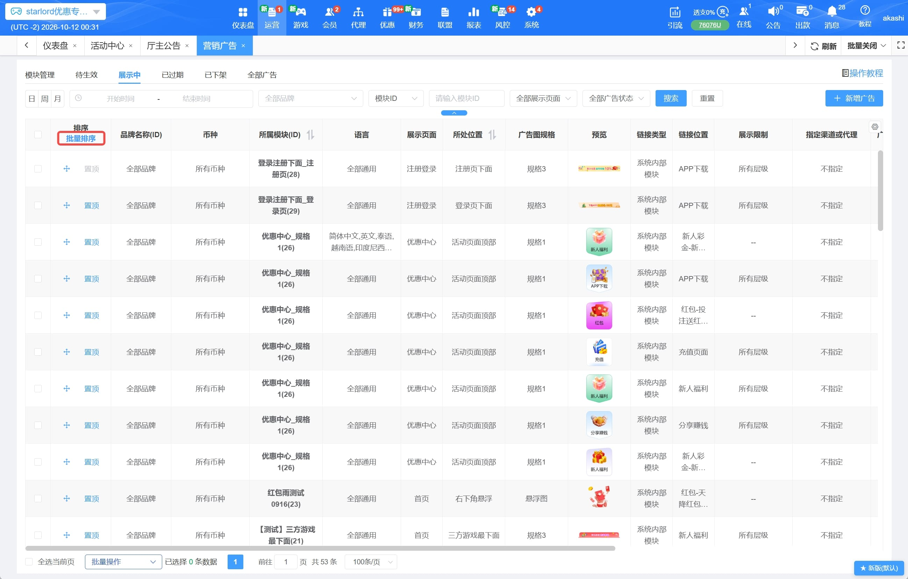 |
| 步骤 | 操作 | 说明 |
| 1 | 确认目标广告 | 先按品牌、模块ID、展示页面等条件查找广告，核对【所属模块(ID)】【所处位置】及【预览】，避免改错对象。 |
| 2 | 点击【批量排序】 | 【排序】列切换为数值输入框，列表头显示【取消】和【保存】。 |
| 3 | 修改排序数值 | 填写需要调整的广告排序值。广告图片按排序值由高到低排列，展示顺序为从左到右、从上到下；数值越高，排序越前。 |
| 4 | 点击【保存】或【取消】 | 完成后点击列表头【保存】提交排序修改；不提交本次修改时点击【取消】。 |
| 5 | 核对结果 | 保存后核对目标模块内的广告顺序，再检查预览及对应页面的展示顺序。 |
【排序图2】修改排序值，并在列表头【保存】或【取消】。
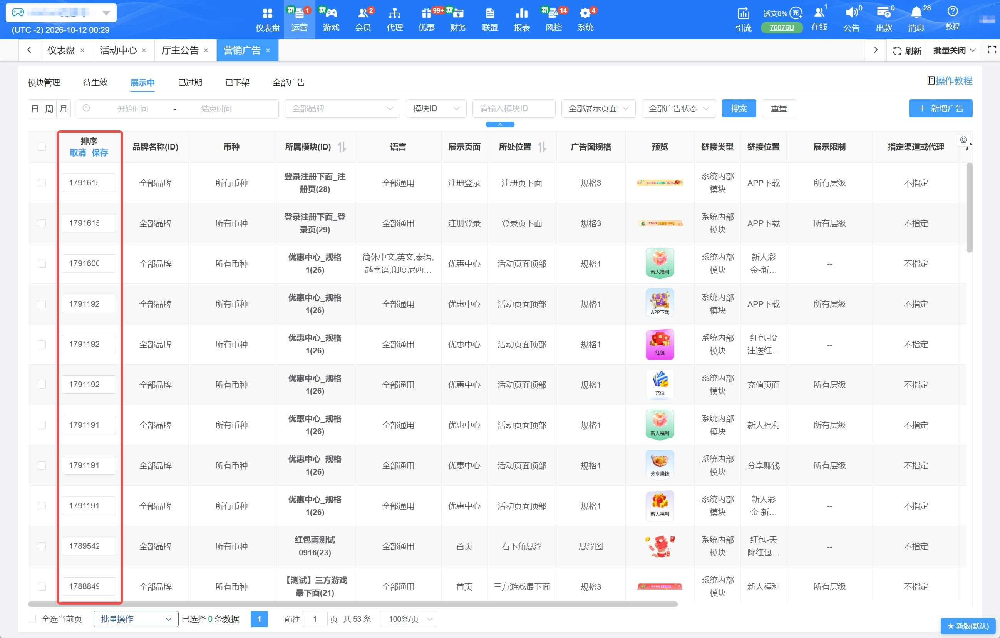 |
注意：此功能调整广告图片排序，不改变悬浮模块按【操作时间】及【是否可关闭】条件确定的排序。截图中的排序数字仅为示例；相同数值的先后规则、允许输入范围及跨页编辑范围未在截图中说明，以当前页面校验为准。【批量排序】位于【排序】列表头，与底部【批量操作】不是同一入口。
四、查看记录
在【营销广告】顶部切换【待生效】【展示中】【已过期】【已下架】或【全部广告】，查看对应广告列表。选择日期、品牌、模块ID、展示页面、状态和广告状态等条件后点击【搜索】。
【图7】全部广告：投放配置与状态列表
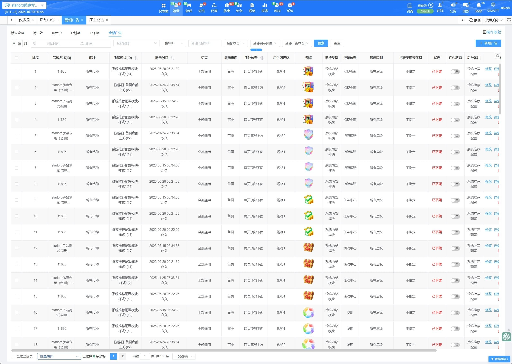 |
| 查看内容 | 列表字段 | 如何核对 |
| 归属与位置 | 【品牌名称(ID)】【币种】【所属模块(ID)】【展示页面】【所处位置】【广告图规格】。 | 确认广告放在计划的品牌、币种和位置。 |
| 时间与语言 | 【展示时间】【语言】。 | 确认时间区间与多语言范围正确。 |
| 素材与跳转 | 【预览】【链接类型】【链接位置】。 | 对照图片内容与跳转目标。 |
| 展示范围 | 【展示限制】【指定渠道或代理】。 | 核对限制是否与投放计划一致。 |
| 状态 | 【状态】与【广告状态】。 | 【状态】示例为【已下架】；【广告状态】为独立开关，两者分别查看。 |
| 操作信息 | 模块列表中的【操作人】【操作时间】【后台备注】。 | 用于核对模块最近的操作信息；截图未展示完整历史审计日志。 |
截图展示的是配置与状态列表，未展示曝光、点击率或转化报表。需要评估效果时，应结合已有统计渠道，不把本列表当作点击统计。
五、玩家端效果
【新增广告】右侧的【预览效果】展示页面示意；左侧【图片预览】用于检查各语言的宣传图，对应界面见【图8】。本次补充的【图18】【图19】提供悬浮图状态与前端位置示例；发布后仍需按目标终端核对实际展示。
| 配置项 | 预期效果／检查方向 |
| 展示页面与位置 | 广告应出现在所选模块对应的页面与位置；检查没有遮住页面主要操作入口。 |
| 广告图规格与轮播 | 按照模块的版式与轮播选择呈现；检查图片完整、主要文案可读。 |
| 语言图片 | 按所选通用或分语言模式展示；检查切换语言后的图片与文字一致。 |
| 链接目标 | 点击广告应到达所选入口；检查落地页与宣传图表达的内容相符。 |
| 终端和展示限制 | 按已保存的终端、人群、渠道等范围核对可见性；同时检查不在范围内的测试条件。 |
| 小红点提示 | 按开关选择核对提示效果，避免提示与当前广告内容不符。 |
建议使用目标语言、终端和符合条件的测试账号逐项检查：图片加载、文字完整、图标无遮挡、点击跳转正确；发现问题后返回模块、广告或图片编辑器修改，再复核。
5.1 模块与前端展示位置对照
下表按补充截图中的位置名称整理，用于核对广告实际放置区域；不是宣称每个页面都提供全部位置。配置时仍以【展示页面】对应的【所处位置】选项为准。
| 页面 | 位置名称 | 前端定位 |
| 首页 | 网页顶部下面 | 网页顶部下方的入口图标区。 |
| 首页 | Banner图下面 | Banner下方、热门／最近／收藏等热门模块上方的广告区。 |
| 首页 | 公告下面 | 公告条下方的横向广告区。 |
| 首页 | 热门游戏上方 | 热门游戏内容区之前的广告区。 |
| 首页 | 热门游戏下面 | 热门游戏内容区之后、三方游戏区之前的广告区。 |
| 首页 | 三方游戏最上方 | 三方游戏区上方的广告区。 |
| 首页 | 三方游戏最下面 | 三方游戏区底部的广告区。 |
| 首页 | 首页底部上方 | 三方游戏下方、底部信息区上方的广告区。 |
| 首页 | 首页最底部 | 首页页面底部的广告区，示例位于底部导航上方。 |
| 首页／全局所有页面 | 左下角悬浮 | 页面左下角的悬浮广告；补充说明列举全局：首页、游戏页面、优惠页面、充提款页面。 |
| 首页／全局所有页面 | 右下角悬浮 | 页面右下角的悬浮广告；补充说明列举的全局页面范围同上。 |
| 个人中心 | 个人中心顶部 | 个人中心页面最上方的横向广告区。 |
| 个人中心 | 个人中心资料上方 | 账号资料与VIP资料区域之后、下方功能项之前的广告区。 |
| 个人中心 | 个人中心中部 | 个人中心功能列表中部的广告区。 |
| 个人中心 | 个人中心底部 | 个人中心页面底部、底部导航上方的广告区。 |
【图19】补充截图3：模块与前端展示位置总览
| 模块名称 | 前端模块位置 | 模块名称 | 前端模块位置 | 模块名称 | 前端模块位置 |
| 首页 网页顶部下面 |
首页 三方游戏最上方 |
首页/全局所有页面 右下角悬浮 |
|||
|
首页 Banner图下面 (热门、最近、收藏，属于热门模块) |
首页 (三方游戏的总上方) |
个人中心 个人中心顶部 |
|||
|
首页 公告下面 |
首页 (三方游戏的总下方) |
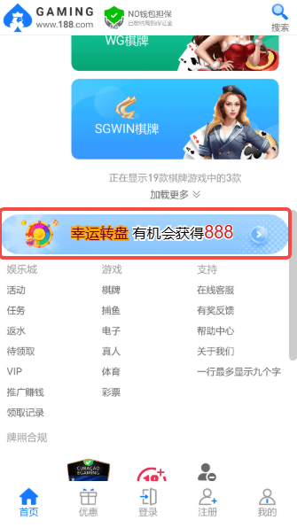 |
个人中心 个人中心资料上方 |
||
|
首页
|
首页 首页最底部 |
个人中心 个人中心中部 |
|||
| 首页 热门游戏下面 |
首页/全局所有页面 左下角悬浮 |
个人中心 个人中心底部 |
|||
|
注册登录 注册页上方 |
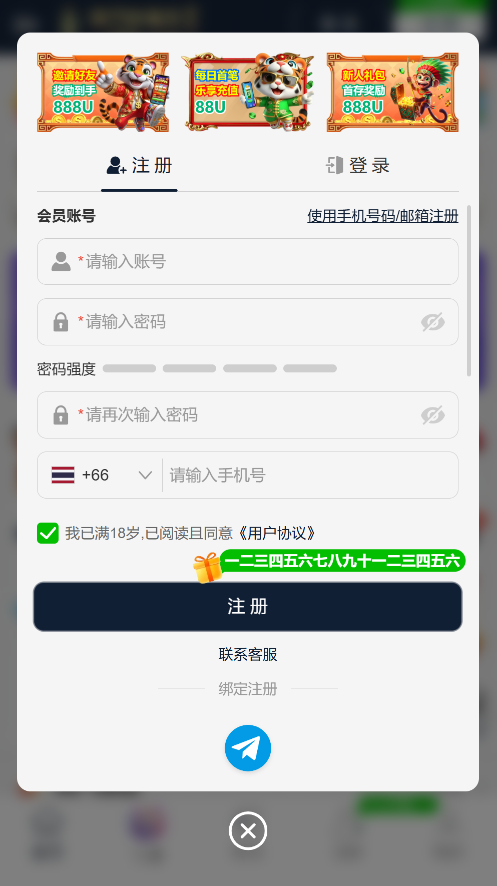 |
注册登录 注册页下面 |
注册登录 登录页上方 |
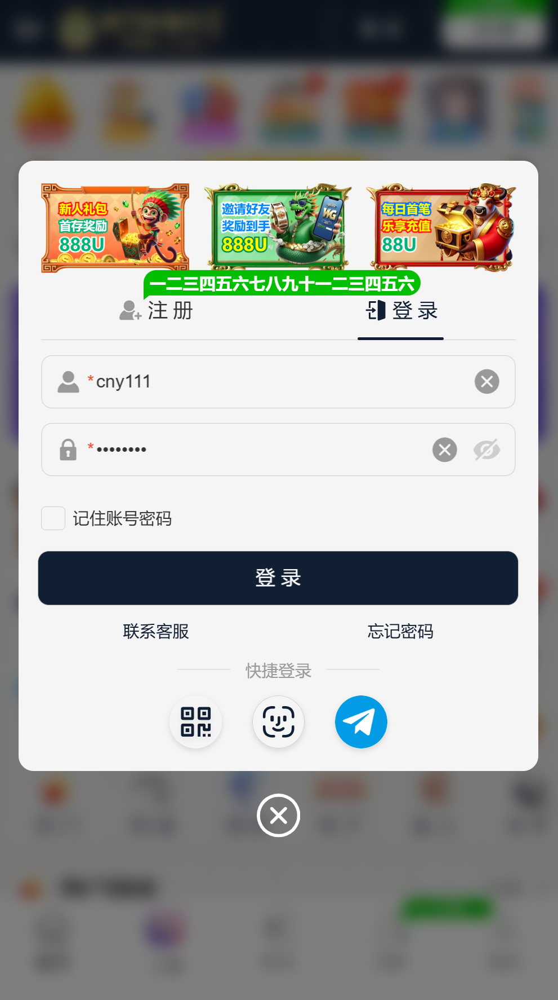 |
|
|
注册登录 登录页下面 |
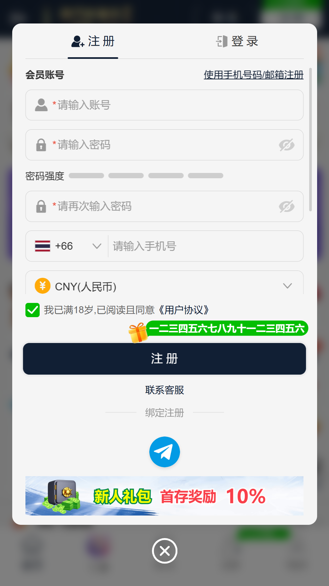 |
优惠中心 活动页面顶部 |
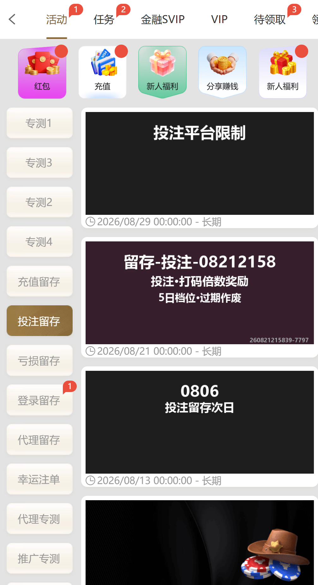 |
|
六、运营建议
| 场景／目标 | 建议配置 | 检查与控制 |
| 让用户找到指定入口 | 图片集中表达一个用途，选择对应内部模块或活动；避免一张图混入多个不相关目标。 | 核对文案与跳转一致，不使用无法证实的说明。 |
| 展示多个并列入口 | 对照规格1／规格2预览选择版式，优先保证每张图能单独读懂。 | 图片数量参考页面建议，不用数量代替清晰度。 |
| 突出一张重点图片 | 对照规格3的横向版式配置，精简标题和说明。 | 在手机预览中确认没有裁切、遮挡和过小文字。 |
| 降低轮播阅读成本 | 按内容长度选择滑动方式；定时轮播给主要信息留足阅读时间。 | 停留秒数先用预览检查，不照搬示例2秒。 |
| 多语言投放 | 含文案的图片优先逐语言检查；同步翻译后逐张核对，必要时单独调整样式。 | 不把同步翻译当作人工审核的替代。 |
| 减少重复制作 | 使用系统模板或个人模板复用版式，保留清晰的备注。 | 复用时重查日期、活动名称、ID与链接，避免旧内容误投。 |
| 控制展示范围 | 只勾选计划中的品牌、币种、终端和人群条件。 | 检查符合与不符合条件的测试账号，避免范围过宽。 |
| 短期展示 | 设置明确的开始和结束时间；常驻入口再考虑【永久】。 | 结束前后查看对应状态列表，并复核玩家端。 |
| 观察效果 | 先确认展示与跳转正确，再结合已有统计对比调整前后表现。 | 截图未展示内置点击或转化统计；不承诺固定提升幅度。 |
七、FAQ
Q：新增模块与新增广告有什么区别？
A：模块确定页面、位置、规格和轮播方式；广告确定图片、链接、展示时间、语言和范围。新增模块后还需要向模块添加广告。
Q：规格旁的图片数量是硬性上限吗？
A：截图写的是配置数量建议：规格1为6～20张，规格2为5～10张，规格3为1～5张。实际可放置数量以所选模块提示与页面校验为准。
Q：为什么选定时自动轮播后多了一个输入框？
A：该方式需要填写【停留秒数】。截图中的2秒只是示例，按图片内容的阅读时间配置，并以页面校验为准。
Q：全部通用与按照语言设置怎么选？
A：所有目标语言可共用同一张图时选【全部通用（推荐）】；需要翻译文字或分别准备素材时选【按照语言设置】，并逐语言预览。
Q：编辑器画布是220×240，上传图片为什么写240×240？
A：220×240是截图中当前模板的画布示例；240×240是【我的】→【图片】上传区标注的尺寸要求。两个位置的要求不能混用。
Q：同步翻译后可以直接生成所有图片吗？
A：先逐语言核对意思、文字长度和布局，确认没有遮挡或裁切，再按编辑器提示生成全部语言图片。
Q：保存到我的后，广告就已经发布了吗？
A：【保存到我的】是素材保存操作。还需返回广告配置页选择素材，检查预览，点击【确认】，再回列表核对时间与状态。
Q：广告保存了，但目标用户没有看到，先查哪里？
A：依次核对模块【是否开启】、广告【广告状态】、【状态】与展示时间，再核对品牌、币种、页面、终端、语言、人群和渠道条件。
Q：在哪里查看谁修改过模块？
A：【模块管理】列表显示【操作人】与【操作时间】。截图未展示完整的历次修改日志入口。
Q：在哪里看点击率或投放转化？
A：提供的截图未展示相关统计入口。本教程中的广告列表用于检查配置与状态；效果分析需使用已有统计渠道。
Q：补充资料的6张起、3张起，与前面6～20张、5～10张如何理解？
A：它们来自不同截图：【样式】说明与【新增模块】表单的【规格】提示不完全一致。教程分别列出，不合并成统一上限；实际配置以当前后台所选模块提示与校验为准。
Q：悬浮图是否只按操作时间排序？
A：不只如此。同侧全部【可关闭】时按模块操作时间排序；混有【隐藏关闭按钮】的模块时，该模块优先排在最上；全部隐藏关闭按钮时，首次按操作时间排序，会员隐藏操作还会影响后续顺序。
Q：新增的广告背景图尺寸，能套用到个人图片上传区吗？
A：不能。图17列的是各样式背景图尺寸；图15的240px×240px和＜1MB是个人图片上传区提示。请按对应入口的要求准备素材。